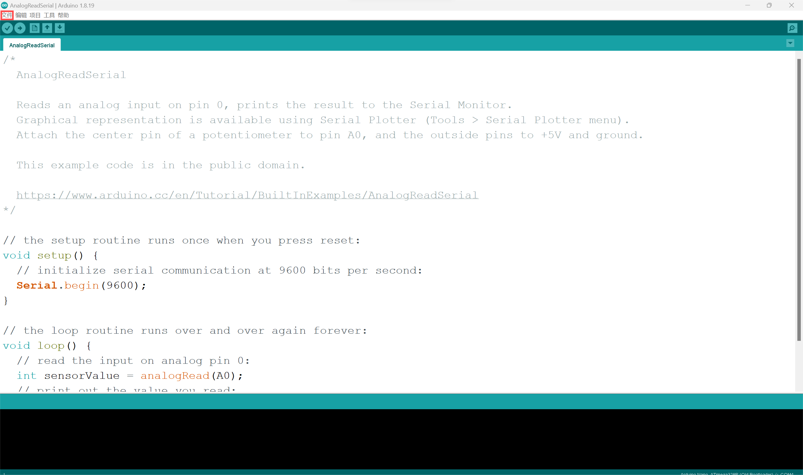
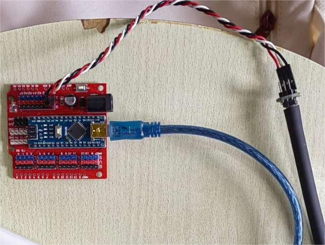
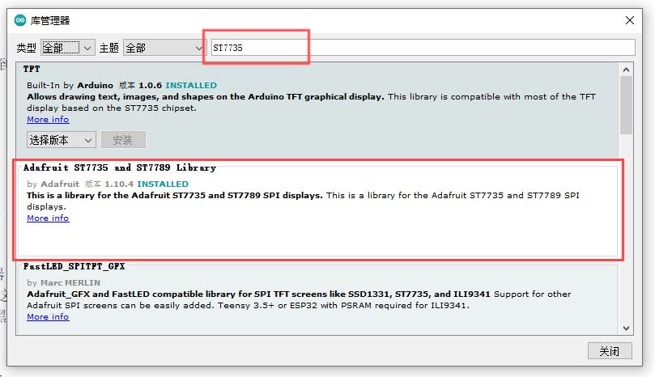

A: Air pressure sensor
A-1 Find the library file
Open Arduino and open the file
Open the example and find AnalogReadSerial in 01 Basics of the built-in example
A-2 Debug code value
Members Rosalynn and Cynthia in the group conducted experimental measurements of the minimum and
maximum pressure values of the airbag respectively.
First, the value with less pressure is tested, and the measurement result is 205

The value of higher pressure was tested again, and the measurement result was 290

A-3 Circuit diagram
A-4 Physical connection mode
A-5 Pneumatic fitting
Cuff accessories for mercury sphygmomanometer - Latex cuff liner
Mercury sphygmomanometer cuff accessory - Inflatable ball bag
The reason why we chose this accessory:
1.The inner liner is made of latex, which is stronger than the film we previously selected,
resistant to pressure and puncture, and not easily broken.
2.These two accessories are medical appliances, safety and sealing are more guaranteed.
3.The accessories are connected with the inflatable air bag, which is convenient for inflating
and replenishing air.
B: Full color RGB light
B-1 Function Introduction
LED lights as indicators, the function is to show the size of the pressure through different colors
of light.
When the pressure is less than 205, the LED lights green, indicating that the pressure is at a low
level.
When the pressure is between 205 and 290 units, the LED lights blue, indicating moderate pressure.
When the pressure is greater than 290 units, the LED lights red, indicating that the pressure is
higher.
This setting allows the user to intuitively understand the pressure state and make judgments or take
actions based on different colors.
B-2 Arduino
//2024.6.19 by JinXuan
// Define the pins connected to the Arduino
const int sensorPin = A0; // Pressure sensor connected to A0
const int switchPin = 2; // Switch connected to D2
const int redLEDpin = 3; // Red LED connected to D3
const int blueLEDpin = 5; // Blue LED connected to D5
const int greenLEDpin = 4; // Green LED connected to D4
// Define thresholds
const int lowThreshold = 205; // Low pressure threshold
const int highThreshold = 290; // High pressure threshold
void setup() {
Serial.begin(9600); // Initialize serial communication
pinMode(sensorPin, INPUT); // Set the pressure sensor pin as input
pinMode(switchPin, INPUT_PULLUP); // Set the switch pin as input and enable internal pull-up resistor
pinMode(redLEDpin, OUTPUT); // Set the red LED pin as output
pinMode(greenLEDpin, OUTPUT); // Set the green LED pin as output
pinMode(blueLEDpin, OUTPUT); // Set the blue LED pin as output
}
void loop() {
// Read the analog value from the pressure sensor
int sensorValue = analogRead(sensorPin);
if (sensorValue < lowThreshold && sensorValue > 10) {
digitalWrite(greenLEDpin, HIGH); // Turn on the green LED
digitalWrite(redLEDpin, LOW); // Turn off the red LED
digitalWrite(blueLEDpin, LOW); // Turn off the blue LED
} else if (sensorValue > highThreshold) {
digitalWrite(greenLEDpin, LOW); // Turn off the green LED
digitalWrite(redLEDpin, HIGH); // Turn on the red LED
digitalWrite(blueLEDpin, LOW); // Turn off the blue LED
} else {
digitalWrite(greenLEDpin, LOW); // Turn off the green LED
digitalWrite(redLEDpin, LOW); // Turn off the red LED
digitalWrite(blueLEDpin, HIGH); // Turn on the blue LED
}
// Add a short delay to avoid high CPU usage
delay(90);
}
B-3 Circuit diagram
B-4 Physical connection mode

B-5 Physical effect

C: ST7735 Screen
C-1 Function Introduction
Through the number of pressure sensors, judge the user's pressure value interval at the moment, and
the corresponding heartbeat rate will be accelerated if the pressure value is too large. Through
the screen, we draw an animation of the heartbeat, and through the change of the heartbeat frequency,
we can visualize the user's pressure value.
C-2 Arduino
1. Library file configuration
step1: Open the Admin library in the arduino toolbar

step2: Search for ST7735 and GFX, download the library files in the picture box and use them.
2. Application code
//2024.6.22 by Jin Cancan
#include <Adafruit_ST7735.h> // Contains the ST7735 library
#include <Adafruit_GFX.h> // Contains the GFX library
// Defines the connection pins for the display
#define TFT_RST 10
#define TFT_DC 9
#define TFT_CS 8
#define TFT_MOSI 11 // Data out
#define TFT_SCLK 13 // Clock out
const int sensorPin = A0;
const int lowThreshold = 180;
const int highThreshold = 250;
int AT=1000;
unsigned long T0;
unsigned long myTime;
Adafruit_ST7735 tft = Adafruit_ST7735(TFT_CS, TFT_DC, TFT_RST);
void setup() {
pinMode(sensorPin, INPUT);
tft.initR(INITR_BLACKTAB); // Initialize the display, where the black Tab is used
tft.fillScreen(ST7735_BLACK); // Fill the screen with black
}
void drawHeart(int x, int y, int heartsize) {
// Calculate the coordinates of the heart vertex
int topX = x;
int topY = y + heartsize / 2;
int leftX = x - heartsize / 2;
int leftY = y ;
int rightX = x + heartsize / 2;
int rightY = y ;
// Draw the apex of the heart shape
tft.fillTriangle(leftX, leftY, topX, topY, rightX, rightY, ST7735_RED);
// Calculate the coordinates of the circular part
int circleSize = heartsize / 3;
int leftCircleX = x - heartsize / 4;
int leftCircleY = y - heartsize / 4 + 1;
int rightCircleX = x + heartsize / 4;
int rightCircleY = y - heartsize / 4 + 1;
// Draw a circle
tft.fillCircle(leftCircleX, leftCircleY, circleSize, ST7735_RED);
tft.fillCircle(rightCircleX, rightCircleY, circleSize, ST7735_RED);
}
void loop() {
tft.fillScreen(ST7735_BLACK);
myTime = millis();
T0=myTime;
int x = tft.width() / 2;
int y = tft.height() / 2;
int sensorValue = analogRead(sensorPin);
if (sensorValue < lowThreshold&&sensorValue>10) {
AT=1000;
} else if (sensorValue > highThreshold) {
AT=200;
}else{
AT=600;
}
do{
// Draw love
// Calculate the size and position of the heart and make sure it is in the center of the screen
if(AT>(millis()-T0)&&(millis()-T0)>=0){
int heartSize = min(tft.width() / 3, tft.height() / 3);
drawHeart(x, y, heartSize);}
if((2*AT)>(millis()-T0)&&(millis()-T0)>=AT){
int heartSize2 = min(tft.width() / 2.5, tft.height() / 2.5);
drawHeart(x, y, heartSize2);
}
if((millis()-T0)>=(2*AT)){
int heartSize3 = min(tft.width() / 2 , tft.height() / 2);
drawHeart(x, y, heartSize3);
}
}while((millis()-T0)<=(3*AT));
}
C-3 Circuit diagram

C-4 Physical connection mode

C-5 Physical effect
When the pressure value is normal

When the pressure is a little high

The pressure value is too high

D: DY1703A Audio playback module
D-1 Function introduction
The main purpose of the sound module is to help the user relieve the current mood.
When the pressure is less than 205, no sound is made.
When the pressure is between 205 and 290, soothing music will be emitted to help the user relax.
When the pressure is greater than 290, a breathing guidance sound is issued, prompting the user
to take deep breaths to reduce stress.
Relief is provided through different types of sound cues.
D-2 Selected voice
When faced with stress, music and meditation are two widely recognized ways to reduce stress.
1-Soothing music choice: "small rainbows" this song is ideal for soothing music with its soft melody
and slow tempo. From a neuroscience perspective, music can directly affect areas of the brain
associated with mood and stress. When we listen to music with a slow tempo and harmonious pitch,
the brain releases "happy hormones" such as dopamine, chemicals that reduce anxiety levels and elevate
our emotional state. In addition, the lyrics of "small rainbows" are healing, stimulating our inner
positivity and helping us stay optimistic and resilient in the face of stress.
2-The choice of breathing guidance: Breathing guidance in meditation is a very effective way to reduce
stress. Breathing is one of the most basic physiological functions of our body, and it is closely
related to our emotional state. By controlling the depth and frequency of breathing, we can adjust the
balance of the autonomic nervous system, thereby reducing the body's stress response. These physiological
changes help us to enter a more calm and relaxed state and thus better cope with life's challenges and
stresses.
D-3 Arduino code
//2024.6.22 by JinXuan
const int sensorPin = A0; // Pressure sensor connected to A0
const int lowThreshold = 205; // Low pressure threshold
const int highThreshold = 290; // High pressure threshold
const int playPin = 6; // Relaxing music
const int playPin2 = 7; // Breathing guidance
void setup() {
Serial.begin(9600);
pinMode(sensorPin, INPUT); // Set the pressure sensor pin as input
pinMode(playPin, OUTPUT); // Output
pinMode(playPin2, OUTPUT); // Output
}
void loop() {
int sensorValue = analogRead(sensorPin);
Serial.println(sensorValue);
delay(1);
if (sensorValue < lowThreshold) {
digitalWrite(playPin, HIGH);
digitalWrite(playPin2, HIGH);
delay(500); // No sound
} else if (sensorValue ` highThreshold) {
digitalWrite(playPin, HIGH);
digitalWrite(playPin2, LOW);
delay(20000); // Breathing guidance
} else {
digitalWrite(playPin, LOW);
digitalWrite(playPin2, HIGH);
delay(20000); // Relaxing music
}
}
D-4 Circuit connection diagram
D-5 Physical connection diagram